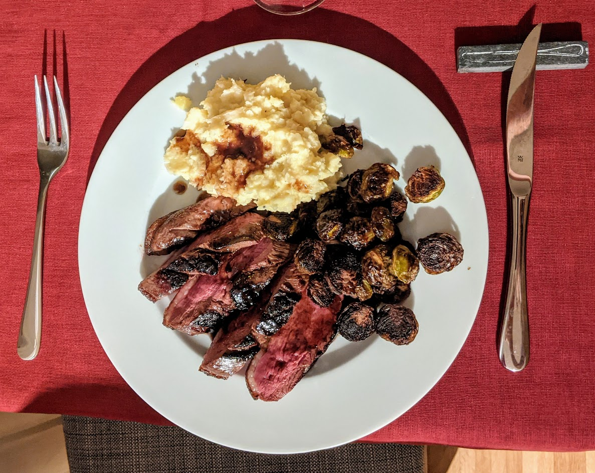

Magrets de canard au miel

Ici avec des choux de Bruxelles rôtis et de la purée de panais
Pour deux personnes :
- Un magret de canard
- Trois cuillères à soupe de miel
- Trois cuillères à soupe de vinaigre balsamique
- Sel, poivre
- Saler le magret, et inciser sa peau pour former un quadrillage, en évitant de couper la viande. Faire chauffer une poêle antiadhésive (idéalement, en fonte) à feu fort.
- Mettre le magrets à cuire côté peau pendant 5 minutes, en enlevant la graisse progressivement en cours de cuisson (c'est une bonne idée la garder pour autre chose, par exemple pour des légumes rôtis). Puis, le retourner, et le faire cuire de l'autre côté pendant 5 minutes.
- Enlever le magret et le réserver, par exemple dans du papier alu, ou à couvert dans un four à 80°C. Ajouter le miel et le vinaigre balsamique dans la casserole, baisser le feu. Bien poivrer, mélanger.
- Dès que ça commence à faire des bulles, sortir du feu, couper le magret pour le présenter, et le napper de sauce.
Retour à la liste des recettes